Where we currently stand in Google search, what the organic data suggests about user intent, and how product, marketing, and engineering alignment builds a stronger long-term discoverability foundation.
90 days of data from Google Search Console and Google Analytics 4, scoped to US traffic. This is an early-stage view — the signals are directional, not definitive. The goal is alignment on where we are and where the opportunity is.
Modern search visibility increasingly depends on semantic clarity and entity understanding — not just metadata or keywords. That shift is why this review looks more like a messaging and positioning conversation than a traditional SEO audit. Strong SEO does not start with metadata, titles, or keywords. It starts with clear page intent, consistent messaging, and alignment between what a page communicates and what Google is asked to understand about it. Engineering can implement the technical layer. The semantic layer — what each page is about, who it is for, what concepts it should be associated with — requires product and marketing input first. This review makes that case with data.
Crawl health, indexing, Core Web Vitals, performance scores, and structured data coverage — what Google can currently access and how well the site performs.
Google has indexed 10 pages of the site. The indexed count and impressions have both grown since February — a healthy correlation that shows the discovery pipeline is active.
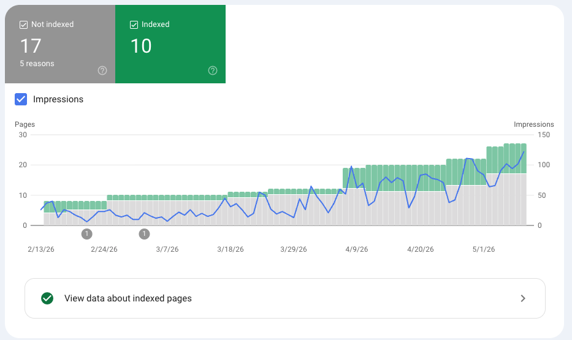
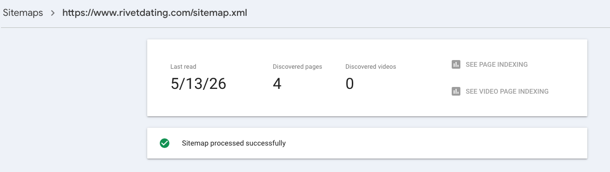
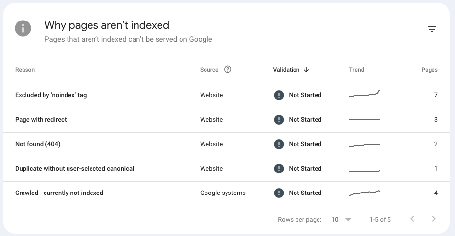
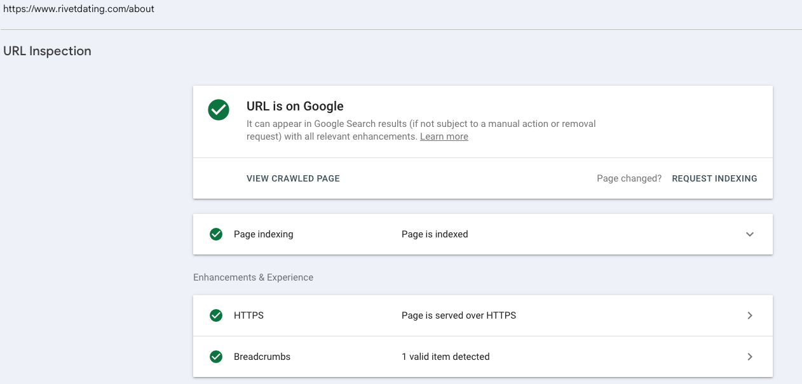
Google uses Core Web Vitals (field data from real Chrome users) as a ranking signal. Desktop passes. Mobile has a known LCP issue — the primary technical SEO item to address.
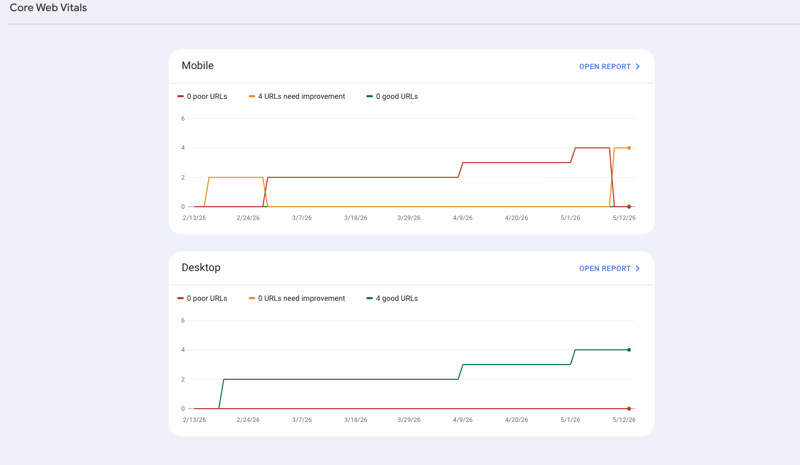
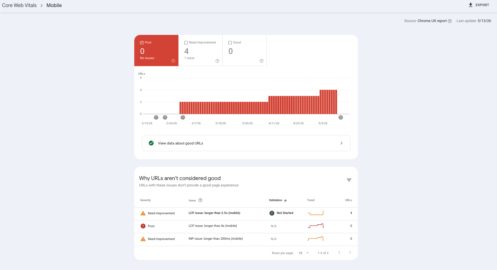
The specific issue: LCP (Largest Contentful Paint) on mobile. At 3.5s, it sits just above the 2.5s "Good" threshold. CLS is perfect (0 layout shift). INP has insufficient data. This is a focused, solvable performance problem — not a broad site quality issue.
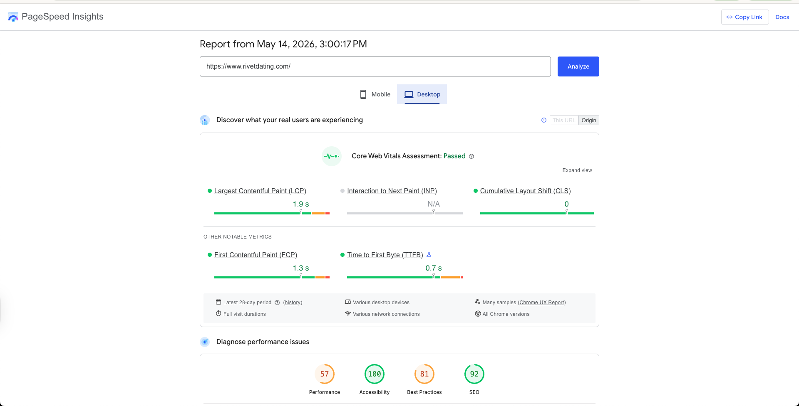
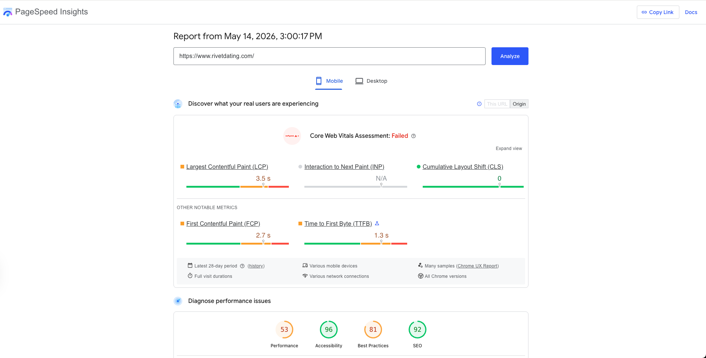
Structured data (JSON-LD / Schema.org) helps Google understand the semantic role of each page. The implementation is already more comprehensive than most early-stage products — with clear, actionable gaps remaining.
| Page / Scope | Schema Types Implemented | Status |
|---|---|---|
| All pages (global) | Organization (name, legal name, address, contact, socials), WebSite (name, alternates, description) | Implemented |
| / (Homepage) | SoftwareApplication (dating app, iOS + Android, free, publisher), WebPage (name, description, testimonials section) | Implemented |
| /about | AboutPage (main entity: Organization, founder: Person), BreadcrumbList | Implemented |
| /help | FAQPage (all Q&A pairs sourced dynamically from help data), BreadcrumbList | Implemented |
| /join | CollectionPage (name, description, publisher, about: Organization), BreadcrumbList | Implemented |
| /join/[id] (job pages) | Intentionally noindex — no schema added. Adding JobPosting schema to a noindex page would contradict the directive (do not show in search) and is not appropriate. | Excluded |
| /download | WebPage (mainEntity references global SoftwareApplication entity via @id), BreadcrumbList | Implemented |
Fully implemented across all current indexable pages: Organization, WebSite, SoftwareApplication, CollectionPage, AboutPage, WebPage, FAQPage, and BreadcrumbList. Every page that should be in search has structured data. /download references the global SoftwareApplication entity. /join/[id] is intentionally noindex and correctly carries no schema.
Forward guidance: All current indexable pages now have structured data in place. When campaign or city pages are built in the future, schema should be defined alongside content — not added retroactively. The right type (LocalBusiness, Event, or WebPage) depends on the page's intent, so the decision belongs at planning time, not after launch.
How often Rivet appears in Google search results, what queries are triggering those appearances, and which pages are actually discoverable.
Last 90 days, February through May 2026, US search traffic. The site has an established and consistent presence in Google search results.
Context on these numbers: The 11% CTR and 7.2 average position are driven almost entirely by branded queries — people already searching for "Rivet" by name. These are healthy indicators of brand recall and technical indexing quality, but they do not reflect broad organic discovery. The real discoverability opportunity lies ahead of these numbers, in the non-brand queries Rivet does not yet rank for.
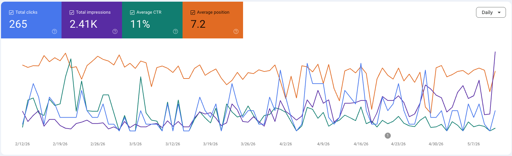
55 unique queries triggered impressions over the last 90 days. The top results tell a consistent and clear story about the current state of semantic understanding.
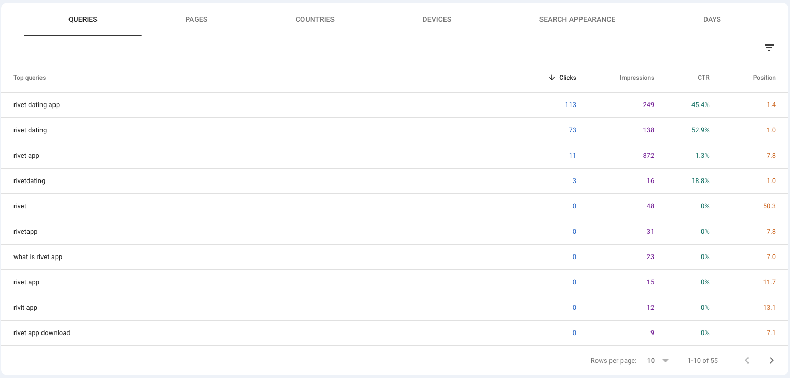
"Rivet dating app" — position 1.4, 45.4% CTR. "Rivet dating" — position 1.0, 52.9% CTR. Google knows exactly what Rivet is when searched by name. Brand-level search health is strong. People who know Rivet can find it reliably.
Every query on this list is a branded variation. "Rivet app," "rivetdating," "rivet dating app" — all are users who already know the name. There is currently zero measurable presence for non-brand discovery: community dating, social matching, city-specific dating. That is the semantic opportunity.
Only 6 pages have appeared in any Google search result over the last 90 days. The distribution is heavily concentrated on a single page.
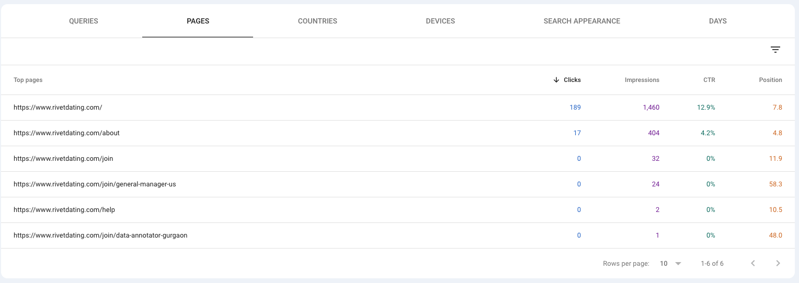
The semantic footprint of the site is currently very shallow. Discoverability is almost entirely concentrated on one page. As campaign pages, city pages, and other content are built out, each needs to carry its own clearly defined semantic purpose — otherwise it contributes nothing to the overall discoverability footprint and becomes invisible by default.
How organic search fits into the broader traffic picture — and what early data suggests about the users who arrive from Google.
Organic Search accounts for approximately 5% of total sessions. The site is currently acquisition-heavy on Paid Search. That is expected for an early-stage product — and it is the context that makes the quality signal ahead meaningful.
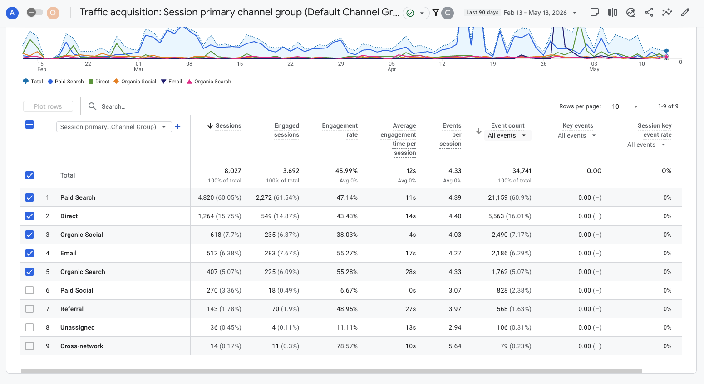
Note on current analytics limitations: Conversion events — app download link clicks, app store referrals, CTA interactions — are not currently instrumented in GA4. The channel metrics above reflect session volume and engagement behavior only, not downstream acquisition outcomes. Attribution clarity will improve significantly once conversion tracking is configured, which is one of the recommended next steps in this review.
Volume is small — early-stage organic always is. But the engagement patterns observed so far are worth noting as directional indicators of channel quality.
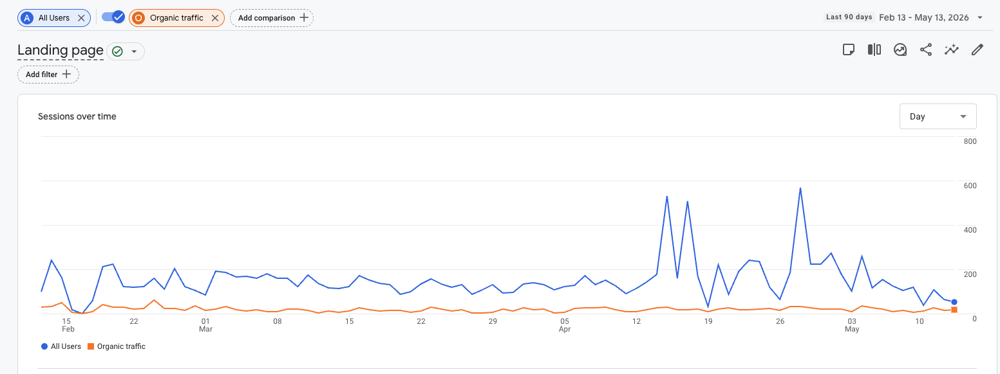
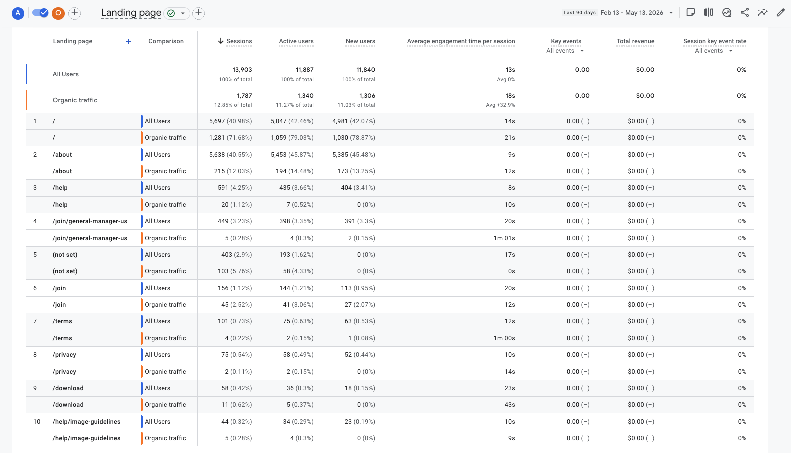
What the data points to, what needs to happen next, and how product, marketing, and engineering each play a role in closing the gap.
This is the core of the discoverability opportunity. It is not a technical problem — it is a semantic and messaging problem that starts at the product and content level.
The distance between these two columns is the SEO opportunity. Closing it is not primarily an engineering task. Google learns what a page is about through its visible content — the actual copy, headings, and narrative — far more than through metadata alone. Metadata summarizes a clearly defined page. It cannot create meaning that the page's visible content doesn't already communicate. This is why product and marketing alignment comes first.
Beyond ranking individual pages, the deeper goal is for Google to recognize Rivet as a meaningful entity in a specific semantic niche — not just "a dating app," but the community-driven, city-rooted dating experience.
Google does not just rank pages. It builds a model of the real world: organizations, products, concepts, places, and the relationships between them. When Google "understands" Rivet, it is deciding what kind of entity Rivet is, what concepts are associated with it, and which searches it should be eligible to appear in. Right now, Rivet is in Google's model primarily as "a dating app brand." The work ahead is expanding that model to include the specific niche Rivet represents.
Consistent terminology across pages. Clear page intent. Structured data (already partially in place). Internal linking between semantically related pages.
PR and media mentions in city/dating contexts. Social brand mentions. Backlinks from relevant communities and city-specific publications. App store presence and reviews.
Entity recognition builds over months and years, not days. The architecture we build now — semantic URLs, city pages, structured data — positions Rivet to earn that recognition as it grows.
Strong discoverability is not a single task. It is a stack of interconnected decisions. Most layers are blocked until the foundational ones are defined by product and marketing.
Engineering can own Layers 3–5 independently and is ready to execute. Structured data is now complete across all current indexable pages — no active gaps. Layer 5 work (mobile LCP fix, internal linking for future campaign pages) can start immediately.
Layers 1 and 2 require product and marketing input first. Without a defined page purpose, implementing Layer 3 produces metadata that guesses at intent rather than summarizes a clearly defined one. That guess compounds over time as semantic debt — pages that exist but mean nothing specific to Google.
Internal linking gap — forward-looking: Past campaign sections used isolated navigation with no links back to the main rivetdating.com site. As new campaign or city pages are built, they must include contextual upward links to core brand pages (homepage, /about, /join) to avoid becoming semantic islands — pages Google crawls independently without associating them with the broader Rivet entity. Contextual cross-linking between the main site pages (homepage ↔ about ↔ help) is also minimal and worth addressing as part of any copy refresh.
Historical data shows campaign pages with genuine content can generate organic sessions. The opportunity is to make the next round intentional, with the right URL architecture in place before pages are built.
The former /gainesville-couples/lodgings page received organic sessions before the campaign was deprecated.
Campaign pages are naturally long-tail discovery surfaces — they combine brand identity with specific city or community context that independent searches target.
Reusing the same URL with swapped city content destroys all accumulated SEO value. Backlinks, indexed history, and search authority are tied to the URL itself — not the content. Once a URL has SEO history, changing its content loses that history permanently.
| Page Type | URL Pattern | Semantic Target | Schema to Add | Long-Term Strategy |
|---|---|---|---|---|
| City Page | /dating-in-gainesville |
Dating in [City] — evergreen intent | LocalBusiness or Place | Permanent, build authority over time |
| Campaign / Event | /campaigns/gainesville-spring-2026 |
Specific activation or event window | Event schema | Archive or redirect after event ends |
| Community Segment | /community/college-dating |
Audience-specific positioning | WebPage or Article | Permanent, build topical depth |
| Job Listing | /join/[role-slug] |
Specific open role | Intentionally noindex — no schema needed unless job listings become a deliberate discovery channel | Keep noindex; remove from sitemap when filled |
City and campaign pages become valuable SEO surfaces only under the right conditions. A page that targets a city keyword but contains templated content with no real local substance — no actual events, no genuine community context, no unique copy — will likely be treated by Google as thin content and may not index effectively or generate meaningful traffic. The Gainesville campaign generated organic discovery precisely because it reflected real activity: real participants, real rankings, real engagement. Future city pages need the same level of genuine substance behind them — not just a city name swapped into a template.
Credible, durable SEO strategy is defined as much by restraint as by action. These are the patterns that reliably undermine long-term discoverability — some are common industry traps, some are tempting shortcuts for a growing product.
Forcing target phrases into copy unnaturally degrades both user experience and semantic clarity. Google's language understanding is sophisticated enough to detect unnatural phrase density — and it produces worse copy for actual users.
Publishing templated or AI-generated copy for city or campaign pages that provides no real value to a reader. Google explicitly targets this pattern — and risks penalizing the entire domain, not just the individual page.
Swapping city content into the same URL each campaign cycle destroys all accumulated SEO value. Backlinks, indexed history, and search authority are tied to the URL itself — not the content loaded inside it.
Writing strong titles and descriptions for pages whose visible content doesn't match or support those claims. Google reads the page, not just the HTML head. Metadata that misrepresents content creates expectation mismatch — for Google and for users.
Creating multiple "dating in [city]" pages with near-identical templated content but different city names. Google treats these as doorway pages — created for search engines rather than users — and may deindex them entirely.
Publishing and indexing pages that exist purely for conversion with no topical clarity. Every indexed page should have a clear, distinctive role. Pages that are semantically indistinct — or duplicates of existing content — dilute the overall semantic footprint of the site.
The common thread: Every pattern above involves building on top of an unclear foundation — creating content, metadata, or pages before the purpose and audience are defined. The "What We're Asking For" section on the next page is precisely the process that prevents these patterns from forming.
Engineering is ready to implement the technical layer — structured data, metadata, canonical handling, performance improvements. That work is most effective when it summarizes clearly defined page intent rather than guessing at it. We need the following answered for each key page.
| Page | Who is this page for? | What should they understand or feel? | What concepts / topics should this page own? |
|---|---|---|---|
| / (Homepage) | To define | To define | To define |
| /about | To define | To define | To define |
| /join | To define | To define | To define |
| /help | To define | To define | To define |
| Future campaign / city pages | To define before building | To define before building | To define before building |
These answers are not optional polish — they are the foundation. They determine what the page copy says, what the metadata summarizes, what structured data schema is appropriate, whether a page should be indexed at all, and how it connects to every other page on the site. Without this alignment, each technical layer is built on a guess rather than a decision. Guesses compound into inconsistent messaging that dilutes both user experience and search clarity.
Clear ownership across the three teams that need to move together. Product and marketing must go first — engineering and analytics work best downstream of defined intent.
The foundation is already there — and it is stronger than it might appear from the outside. The site is indexed, crawlable, structured data is partially in place, and there are already early organic signals worth building on. The next phase is not fixing SEO. It is about making every page's intent clear and deliberate so that the technical layer engineering implements actually represents something meaningful to Google — and, over time, earns Rivet a recognized place in the semantic niche it is building toward.
For context on how to interpret the data in this review.